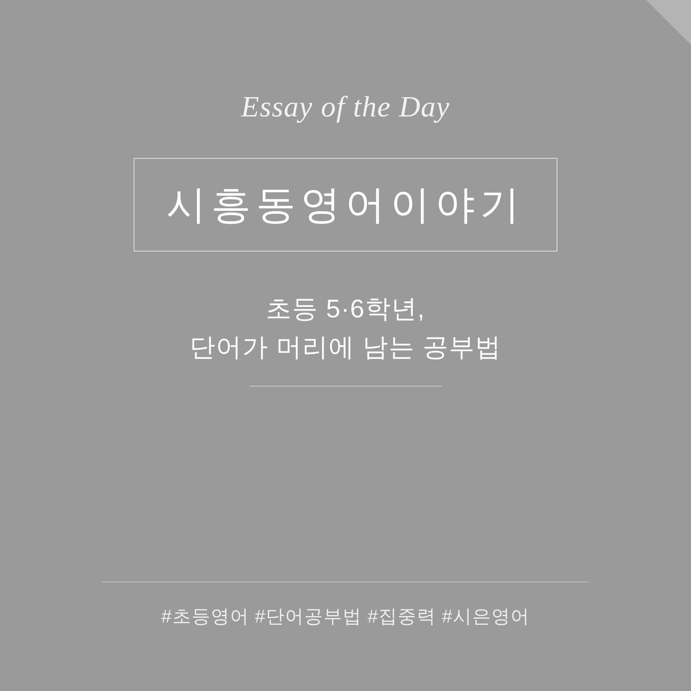

한 시간 앉혀놔도, 머리에 안 남는 이유
초등 5·6학년 학부모님들께 자주 듣는 말이 있습니다. "한 시간을 외우게 했는데 다음 날 물어보면 다 까먹었어요."
아이가 게을러서가 아닙니다. 머리가 나빠서도 아니고요. 문제는 한 시간을 '한 덩어리로' 외웠다는 데 있습니다. 사람의 집중력은 그렇게 오래 한 자리에 머물지 못합니다. 어른도 그런데, 초등학생은 더하죠. 앉아 있는 한 시간 중에 진짜 집중한 시간은 얼마 안 됩니다. 나머지는 책을 보고 있을 뿐, 머리는 다른 데 가 있는 거예요.
그래서 저는 시간을 잘게 쪼갭니다
시은영어에서 초등 단어를 잡는 방식은 단순합니다. 30분을 공부하되, 10분마다 끊어서 시험을 봅니다.
먼저 10분 외우고, 바로 시험. 또 10분 외우고, 또 시험. 이렇게 짧게 끊으면 아이가 "곧 시험이다"라는 긴장을 계속 안고 갑니다. 그 긴장이 집중력을 높은 상태로 붙잡아 줍니다. 한 시간을 멍하니 앉아 있는 것보다, 10분씩 바짝 집중하는 게 훨씬 많이 남습니다.
틀린 것만 형광펜, 그리고 다시
시험을 보면 맞은 단어와 틀린 단어가 갈립니다. 여기서 중요한 건, 맞은 단어는 더 볼 필요가 없다는 겁니다. 이미 아는 거니까요.
그래서 틀린 단어에만 형광펜을 칠합니다. 그리고 그것만 다시 외워 재시험을 봅니다. 아이는 모르는 것에만 힘을 쓰게 되고, 공부량은 확 줄어드는데 효율은 올라갑니다. 다 아는 단어를 또 보느라 지치는 일이 없어지는 거죠.
마지막에 진짜 시험
이렇게 10분 단위로 외우고 틀린 것만 잡아낸 뒤, 마지막에 전체를 모아 진짜 시험을 봅니다. 앞에서 여러 번 걸러졌으니, 이 마지막 시험은 통과율이 높습니다. 아이는 "내가 다 외웠다"는 성취감을 안고 끝냅니다. 이 성취감이 다음 공부의 힘이 됩니다.
계속되는 시험이, 긴 공부를 가능하게 합니다
핵심은 이거예요. 끊임없이 시험을 보기 때문에 집중력이 처음부터 끝까지 높게 유지된다는 것. 그래서 긴 시간을 공부해도 아이가 늘어지지 않습니다. 30분이 한 시간이 되고, 한 시간이 더 길어져도 버틸 수 있는 힘이 생깁니다. 시험이 채찍이 아니라, 집중을 붙잡아 주는 장치인 셈이죠.
실제로 얼마 전, 한 초등 6학년 학생이 이 방식으로 단어 200개를 통과했습니다. 한 번에 200개를 외운 게 아니라, 10분씩 끊어 시험 보고, 틀린 것만 다시 잡기를 반복한 결과였습니다. 아이 스스로도 "이렇게 많이 외운 건 처음"이라며 놀라워했습니다.
단어는 머리가 아니라 방법입니다
단어를 못 외우는 아이는 없습니다. 자기에게 맞지 않는 방법으로 외우고 있는 아이가 있을 뿐입니다. 한 시간을 통째로 버티게 하는 대신, 짧게 끊고 자주 확인하고 틀린 것만 다시 보게 하면 — 아이는 생각보다 훨씬 많은 것을 머리에 남깁니다.
단어를 못 외우는 아이는 없습니다.
맞지 않는 방법으로 외우는 아이가
있을 뿐입니다.
오늘 우리 아이가 단어 앞에서 지쳐 있다면, 외우는 양이 아니라 외우는 방법을 한번 바꿔보시길 권합니다.